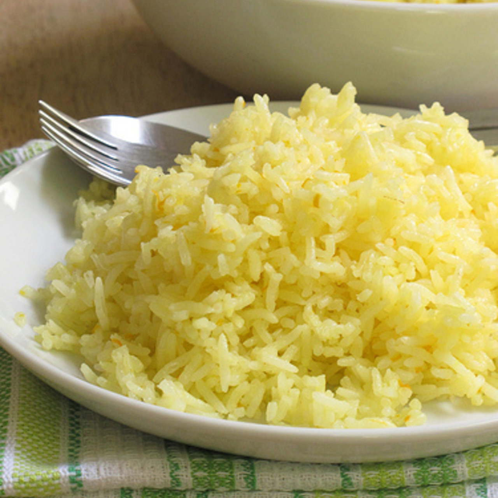

Butter rice

Butter rice flavored with garlic and fluffy consistency, perfect for family meetings! all your parents will love it!!
This is a fast, cheap and delicious side for all your meals and can be easy changed at your needs, lets try it out!!
Ingredients
- Rice: 2 cups
- Butter: 300 grams
- Garlic: 2 pcs
- Water: 4 cups
- Corn
- Salt
- Pepper
- Knorr seasoning
- Take 2 cups of rice and clean it up until the water is clear
- put the clean rise in a container
- use a casserole with medium fire level and put 200 grams of butter and 2 peeled off garlics (be careful, the butter melt fast)
- let the garlics be toasted (3 min max)
- add the rice and mix it with the butter until all rices are covered
- leave the rice warming up for 2 minutes and add 1 water cup per rice cup (for this recipe add 4 water cups)
- add 2 salt spoons, 2 pepper spoons, 1 seasoning knorr spoon and mix gently for 15 secs until condiments are dissolved
- put the fire in high and let it cook by 3 min
- then add corn and mix gently
- after adding the corn, put the fire in low and close the casserole for 5 more minutes
- verify if water is evaporated, carefully with a spoon in the middle of the casserole move sightly the rice to see the bottom of the casserole
- if you still see water, close again the casserole and wait until water is evaporated
This is it!!! taste it and enjoy it with your family as a side for the picadillo mexicano!